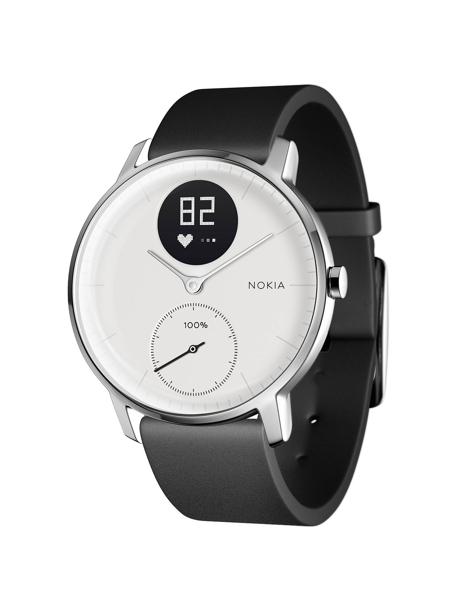

Nokia Steel HR to „hybrydowy” smartwatch i monitor aktywności / fitness opracowany przez firmę Nokia i wydany w grudniu 2017 r. [1] [2] Jego konstrukcja[3] jest w większości oparta na modelu Withings Steel HR. Zegarek jest dostępny w wariantach 36 mm i 40 mm, dostępny w różnych kolorach oraz z paskami silikonowymi, skórzanymi i tkanymi.[4][5] Paruje się ze smartfonem z aplikacją Nokia Health Mate, a także przekazuje powiadomienia ze smartfona. Steel HR jest wyposażony w czujnik tętna i jest wodoodporny.[6]
Powrót